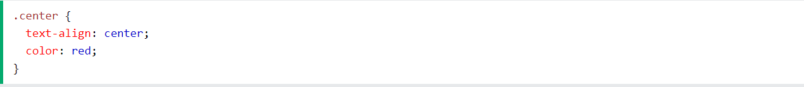
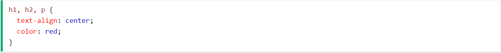

CSS selectors are used to "find" (or select) the HTML elements you want to style.
The element selector selects HTML elements based on the element name.
Here, all < p> elements on the page will be center-aligned, with a red text color:

The id selector uses the id attribute of an HTML element to select a specific element.
The id of an element is unique within a page, so the id selector is used to select one unique element!
To select an element with a specific id, write a hash (#) character, followed by the id of the element.
The CSS rule below will be applied to the HTML element with id="para1":

The class selector selects HTML elements with a specific class attribute.
To select elements with a specific class, write a period (.) character, followed by the class name.
In this example all HTML elements with class="center" will be red and center-aligned:
HTML elements can also refer to more than one class.
In this example the < p> element will be styled according to class="center" and to class="large":
The universal selector (*) selects all HTML elements on the page.
The CSS rule below will affect every HTML element on the page:

The grouping selector selects all the HTML elements with the same style definitions.
Look at the following CSS code (the h1, h2, and p elements have the same style definitions):

It will be better to group the selectors, to minimize the code.
To group selectors, separate each selector with a comma.
